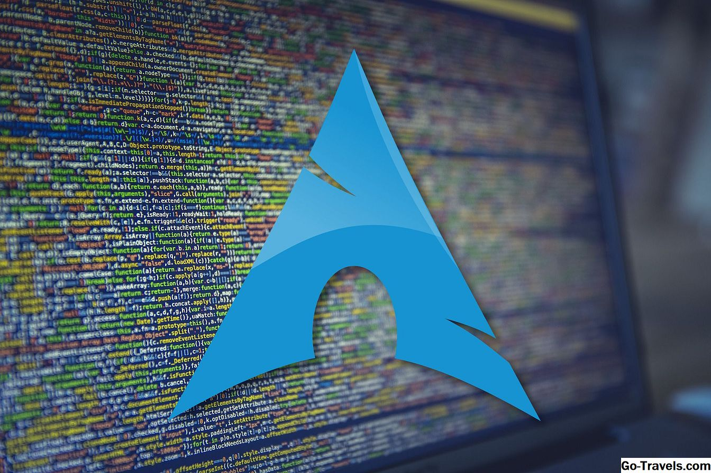

Linux disztribúciók
Egy disztribúció adott készítőtől vagy gyártótól származó összeállítás, amely egy GNU/Linux alaprendszert, és ahhoz tartozó, bizonyos szempontok szerint válogatott és testre szabott programokat (és gyakran egyéni kernelt) tartalmaz. A disztribúciók sokfélesége kompatibilitási problémákhoz vezet, azaz nem biztos, hogyha egy program működik az egyiken, akkor működni fog a másikon is. Ennek az az oka, hogy a különböző disztribúciók részben különböző bináris formátumokat, indexelést használnak.A legtöbb disztribúció emellett PHP, Perl, Ruby, Python és egyéb dinamikus nyelveket is támogatnak. Habár ez nem általános, de a Linux támogatja a C#-ot is.
BlackPanther OS
A magyarok által fejlesztett RPM-alapú Linux disztribúció, aminek a fejlesztése 2002-ben indult el. Azért jött létre, hogy elfedje a különbségeket a Microsoft Windows és a Linux rendszerek között. A kezdő felhasználók könnyű használatáért és egyszerű menü alapú karbantarthatóságáért választják, a tapasztaltabbak a stabilitás és a megbízhatóság miatt használják.
Arch Linux
Az Arch Linux egy független, x86-64 architektúrájú mikroprocesszorokra optimalizált közösségi Linux-disztribúció, közép- és haladó szintű Linux felhasználók számára. Az Arch Linux feltelepítését követően egy alaprendszert biztosít parancssoros felhasználói felülettel, lehetővé téve a felhasználóknak a rendszer további összetevőinek megválasztását, telepítését, konfigurálását. Az Arch Linux-ot 2001 elején kezdte el fejleszteni Judd Vinet kanadai programozó, első stabil kiadása pedig 2002. 2007-ig a projekt vezetője Judd Vinet volt, ezután 2020 februárig Aaron Griffin vette át a projektmenedzser szerepet. A jelenlegi vezető fejlesztő Polyák Levente. Az Arch Linux elsősorban bináris csomagokra épül. Ezeket a csomagokat a Pacman csomagkezelő kezeli, beleértve a telepítést, frissítést és az eltávolítást.
